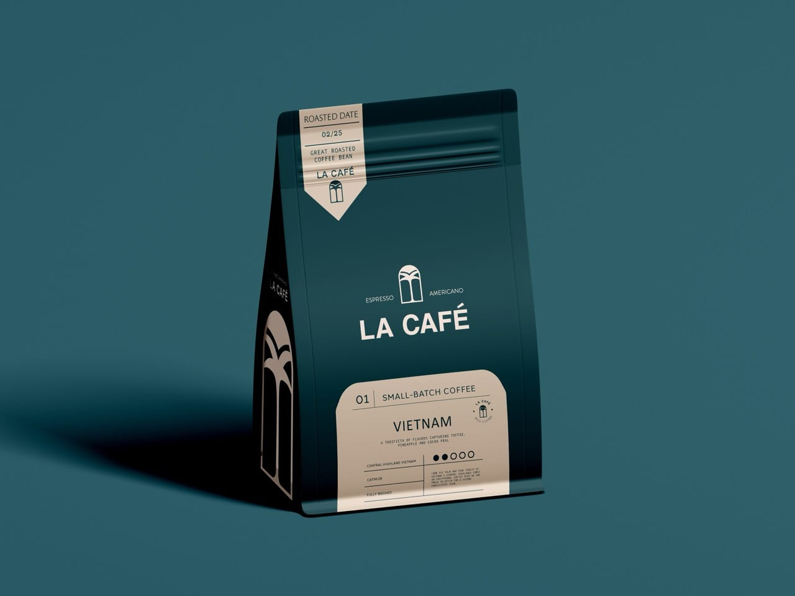

La Café, warm Parisian craft from cup to web.
La Café is a premium coffee brand offering high-quality blends for espresso and Americano. I delivered a full Brand Starter Pack, from a custom logomark and brand identity to a conversion-focused, mobile-first e-commerce website on lacafe.live that lifted average session duration 36% in month one.

The brief
La Café offers high-quality coffee blends for espresso and Americano and needed a way to stand out in a growing specialty market. The goal was a distinctive visual identity paired with a responsive, intuitive store that made shopping feel seamless. The brand also wanted visual storytelling that reflected quality and craftsmanship, on a site engineered to convert, scale, and perform.


What we built
The work started with brand discovery: competitor analysis to identify visual gaps in the premium coffee market, tone and persona definition, and a strategic foundation blending luxury aesthetics with everyday approachability. From there we designed a psychology-led logomark cueing trust and refinement, a refined color palette, and typography pairings that feel premium yet readable. On the product side we mapped the full user journey from landing to checkout, with a high-fidelity, content-focused interface and calls-to-action placed where they matter.


The outcome
The refined UX and lightweight, modular build produced measurable gains. Average session duration rose 36% within the first month and product discovery ran 2.1x faster. The site loads fast on mobile, the identity strengthened brand recall across packaging and digital touchpoints, and the scalable CMS structure supports new products and marketing rollouts. In the client's words, Sebastin of La Café said the team did an incredible job bringing the café's personality online.
